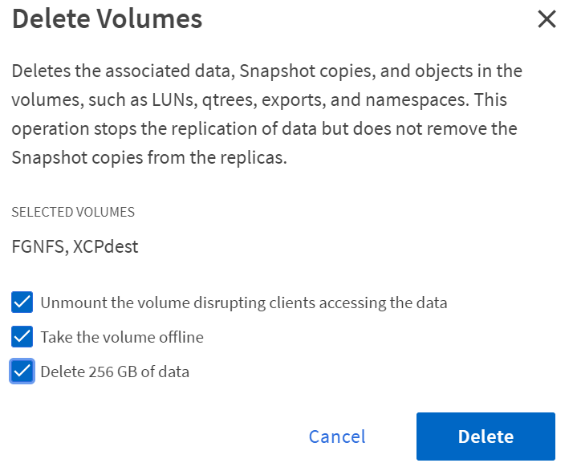

NetApp ONTAP 9.9.1 – Funktionsübersicht
NetApp ONTAP 9.9.1 – Funktionsübersicht
Verbesserungen von System Manager
 Änderungen vorschlagen
Änderungen vorschlagen
Mit dem im ONTAP 9.8 eingeführten überarbeiteten GUI-Erlebnis für ONTAP haben Sie möglicherweise bemerkt, dass einige Dinge verschoben oder nicht mehr verfügbar waren. In ONTAP 9.9 haben wir Kundenfeedback gesammelt und einige Bedenken bezüglich der Benutzeroberfläche angesprochen. Außerdem haben wir einige der fehlenden Funktionen wieder hinzugefügt sowie neue und verbesserte Funktionen hinzugefügt. Der folgende Abschnitt behandelt einige dieser Änderungen und Neuzugänge. Informationen zu System Manager finden Sie auch in der "System Manager Dokumentation".
Funktionalität wiederhergestellt/Verbesserungen der Benutzerfreundlichkeit
Sie haben darum gebeten, und wir haben zugehört. In ONTAP 9.9 wurden einige der Funktionen, die in ONTAP 9.8 System Manager nicht mehr verfügbar waren, wieder in das Produkt aufgenommen. Darüber hinaus wurden neue Verbesserungen der Benutzerfreundlichkeit einbezogen.
Manuelle Auswahl einer lokalen Tiers/Aggregate während der Volume-Bereitstellung
Mit System Manager 9.9.1 können Sie manuell das physische Storage-Tier auswählen, das Sie beim Bereitstellen neuer Volumes verwenden möchten. Dies schließt die Möglichkeit ein, Aggregate während der Erstellung eines FlexGroup Volumes anzugeben. Optional können Sie den ONTAP und System Manager weiterhin die Auswahl basierend auf einer ausgewogenen Speicherlogik zulassen.
Verbesserungen der Kapazitätsanzeige
Jetzt können Sie den logischen genutzten Speicherplatz durch Snapshot Kopien in ONTAP anzeigen und die Storage-Effizienzverhältnisse mit und ohne Snapshot Kopien erkennen.
Die folgende Abbildung zeigt die Ansicht der Kapazität von ONTAP System Manager 9.9.1.

NVMe over Fibre Channel – LIF-Erstellung
Mit System Manager können Sie nun LIFs erstellen und anzeigen, die mit NVMe over Fibre Channel-Namespaces verwendet werden, einschließlich Port-Status, asymmetrischer Portauswahl und die Fähigkeit, die Anzahl der pro Port erstellten LIFs anzuzeigen, um eine Überlastung einer physischen Netzwerkschnittstelle zu vermeiden.
EMS Event Viewer – Dashboard
Für eine schnellere Darstellung welcher Probleme in Ihrem ONTAP-Cluster vorhanden sein könnten, fügt System Manager 9.9.1 beim ersten Einloggen EMS-Ereignisse auf dem Dashboard hinzu. Dazu zählen Fehler der letzten 24 Stunden, z. B. defekte Festplatten, weniger Netzwerkverbindungen, Lizenzprobleme und Shelf- oder Node-Fehler.
Zudem erhalten Sie Warnungen der letzten 24 Stunden, einschließlich fehlgeschlagener Volume-Verschiebungen und Warnmeldungen der Systemzustandsüberwachung.
Snapshot-Größen und SnapMirror-Labels
In den Snapshot-Ansichten in System Manager können Sie Snapshot-Größen und -Etiketten (z. B. täglich, wöchentlich usw.) auf SnapMirror Snapshot-Kopien anzeigen.

Daten-LIFs neu zuweisen
Während eines Failover oder nach dem Ausfall eines Netzwerks bleiben Daten-LIFs oft im Failover-Port, was zu potenziellen Performance- und Resiliency-Problemen führen kann. Wenn Sie diese Daten-LIFs einfach zurücksenden möchten, bietet System Manager 9.9.1 jetzt mit nur einem Klick die Möglichkeit, alle Daten-LIFs zurück an die vorgesehenen Home-Ports zu senden.
Neue Volume-Felder zum ein-/Ausblenden
Es gibt weitere Möglichkeiten, Volume-Informationen in System Manager 9.9.1 über die Schaltfläche „ein-/Ausblenden“ anzuzeigen, einschließlich lokaler Tiers und verfügbarer/genutzter Informationen.
In der folgenden Abbildung sind die neuen Volume-Ansichten in ONTAP System Manager 9.9 dargestellt. 1.

Massenvorgänge
Wenn Sie mehrere Volumes verschieben oder löschen müssen, einer Initiatorgruppe mehrere LUNs zuordnen oder einer Cloud-Ebene mehrere Volumes hinzufügen möchten, haben Sie die Möglichkeit, mehrere Objekte auszuwählen und Aufgaben auszuführen. Bei Volume-Löschungen besteht auch die Möglichkeit, das Mounten, das Offline-Modus und die Bestätigung von Löschungen in einem einzelnen Fenster aufzuheben.
Die folgende Abbildung zeigt die vereinfachten Volume-Löschungen in ONTAP System Manager 9.9.1.

Active IQ Integration
Um ONTAP Benutzern einen einzigen Zugriffspunkt für mehrere Informationsquellen zu ermöglichen, ermöglicht System Manager 9.9.1 die Integration in die NetApp Active IQ Lösung. Dies liefert Firmware-Empfehlungen sowie eine Methode, um die Bilder direkt von der NetApp Support-Website herunterzuladen und einfach auf Support-Case-Ansichten für wann Sie sehen möchten, was mit Ihrem Cluster vor sich geht. Navigieren Sie im linken Menü einfach zum Support-Link unter Cluster und registrieren Sie den Cluster mit Active IQ.
Die folgende Abbildung zeigt die Active IQ-Ansichten in ONTAP System Manager 9.9.1.

Erweiterung der Hardware-Visualisierungsplattformen
Die Hardware-Visualisierung umfasst Informationen wie Plattformmodelle, Seriennummern, Takeover-/Giveback-Status, Plattenstatus, Port-Informationen und vieles mehr. ONTAP 9.9.1 unterstützt zusätzliche Plattformen zur Hardware-Visualisierung und kann alle aktuellen AFF Plattformen umfassen.

Die folgenden Komponenten werden in ONTAP 9.9 unterstützt:
-
* Plattformen.* C190 / A220 / A250 / A300 / A400 / A700 / A700s / A800 / A320 / FAS500f
-
FESTPLATTEN-SHELFS DS4243/DS4486/DS212C/DS2246/DS224C/NS224
-
* Netzwerk-Switches* Cisco Nexus 3232C / Cisco Nexus 9336C-FX2
Ansible Playbook-Workflows
Immer mehr Unternehmen setzen auf die Automatisierung täglicher Aufgaben mit Applikationen wie Ansible, um wiederholbare, fehlerfreie Workflows zu bieten. NetApp verfügt über eine gesamte Bibliothek mit Ansible Playbooks. Diese und weitere Informationen finden Sie im "Ansible für NetApp Seite".
System Manager 9.9.1 bietet weitere Möglichkeiten zur Verwendung von Ansible mit einer neuen Möglichkeit, Playbooks mit nur einem Klick zu generieren. Um diese Playbooks zu verwenden, installieren Sie Ansible und die NetApp Sammlung von "Ansible-Galaxie", Sie können jedoch Playbooks erstellen, indem Sie in System Manager auf den Link „in Ansible speichern“ in bestimmten Aufgaben zur Storage-Bereitstellung klicken.

Durch Klicken auf diese Schaltfläche wird eine ZIP-Datei mit den für Ansible erforderlichen .yaml-Dateien erstellt.

Verbesserungen bei der Dateisystemanalyse
In Umgebungen mit vielen Dateien erfordern Versuche, Informationen über Ordnerkapazität, Alter und Dateianzahl zu finden, in der Regel zeitintensive Befehle oder Skripte, die serielle Operationen über NAS-Protokolle ausführen, wie z. B. ls, du, find, und stat.
Mit ONTAP System Manager 9.8 können Administratoren File-Systeminformationen auf beliebigen NAS Storage Volumes schnell und einfach ermitteln, da sie einen Scanner mit geringen Auswirkungen für jedes Volume ermöglicht haben. Dieser Scanner durchsucht das ONTAP-Dateisystem im Hintergrund mit einem Job mit niedriger Priorität und liefert eine Fülle von Informationen, die verfügbar sind, sobald Sie zu einem Volume navigieren, auf dem es aktiviert ist.
Aktivieren "Filesystem-Analyse" Ist so einfach wie das Navigieren zu der Lautstärke, die Sie scannen möchten. Wechseln Sie zu Storage > Volumes und dann zur Suche nach dem gewünschten Volume. Klicken Sie auf das Volume und dann auf die Registerkarte Explorer.
Hier sehen Sie den Link Analytics aktivieren auf der rechten Seite der Seite.

Nachdem Sie auf Aktivieren geklickt haben, wird der Scanner gestartet. Die Dauer des Abschlusses hängt von der Anzahl der Objekte im Volume sowie von der Systemlast ab. Nach Abschluss dieses Vorgangs wird die gesamte Verzeichnisstruktur angezeigt, die in der Ansicht System Manager aufgefüllt ist. Diese Ansicht kann im Verzeichnisbaum navigiert werden und bietet Zugriff auf Verlaufsdaten, Verzeichnisinformationen und Dateigrößen.
ONTAP 9.9.1 bietet einige zusätzliche Verbesserungen der Funktion, wie das Filtern nach Datei- oder Verzeichnisnamen und das Ausführen "Schnelles Löschen des Verzeichnisses".
Andere Verbesserungen bei System Manager 9.9.1
ONTAP 9 9.1 enthält darüber hinaus die folgenden Verbesserungen an System Manager:
|
|